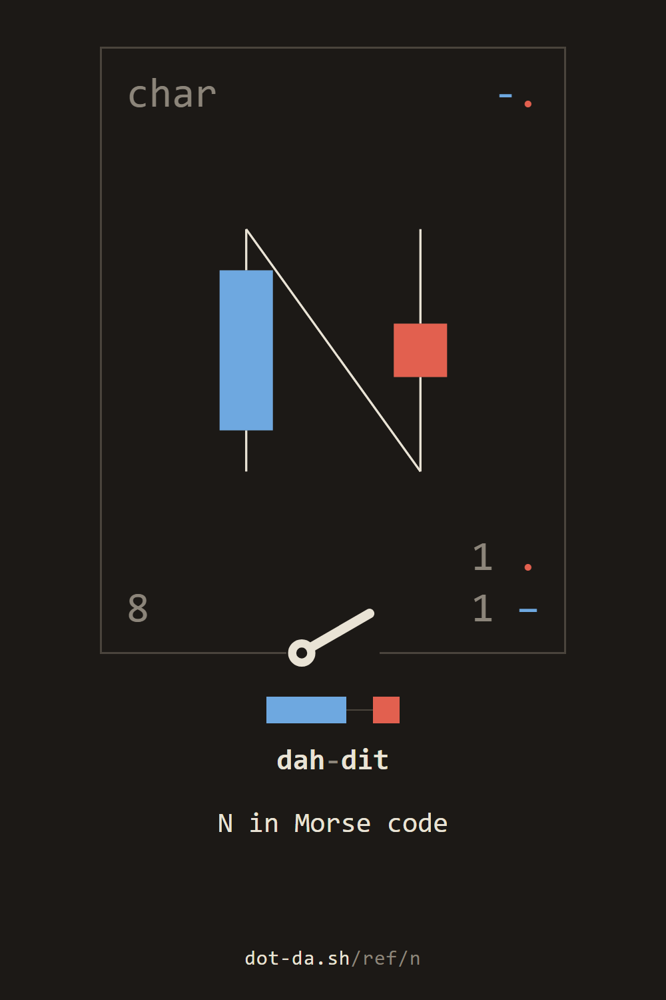
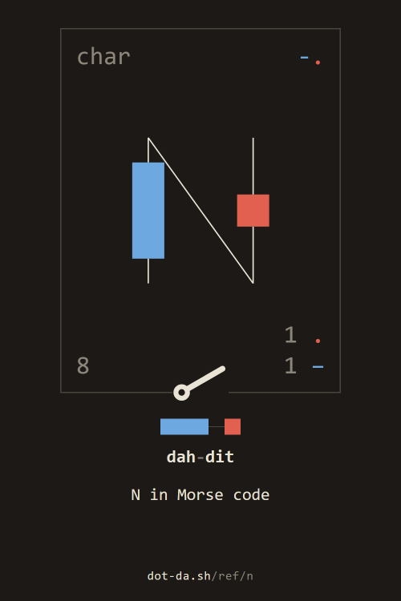
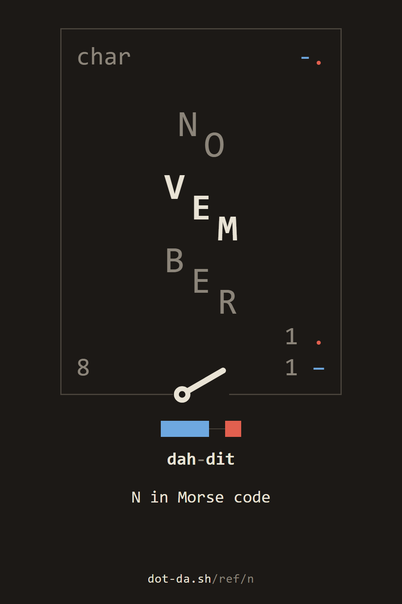
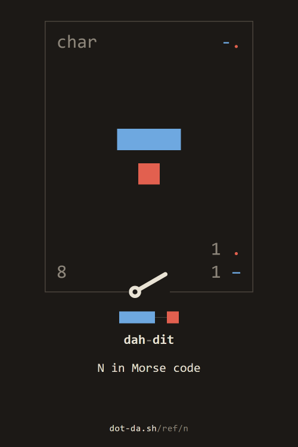

the reference / N
N in Morse code
the letter N
charcut-.N81 .
1 −
the 6th most common letter in English
NOVEMBER
N
cut
~
key it in the station · its card in the reference · hear it (.wav)
to keep










For programs: the parts as JSON, the sound, the keyed card.